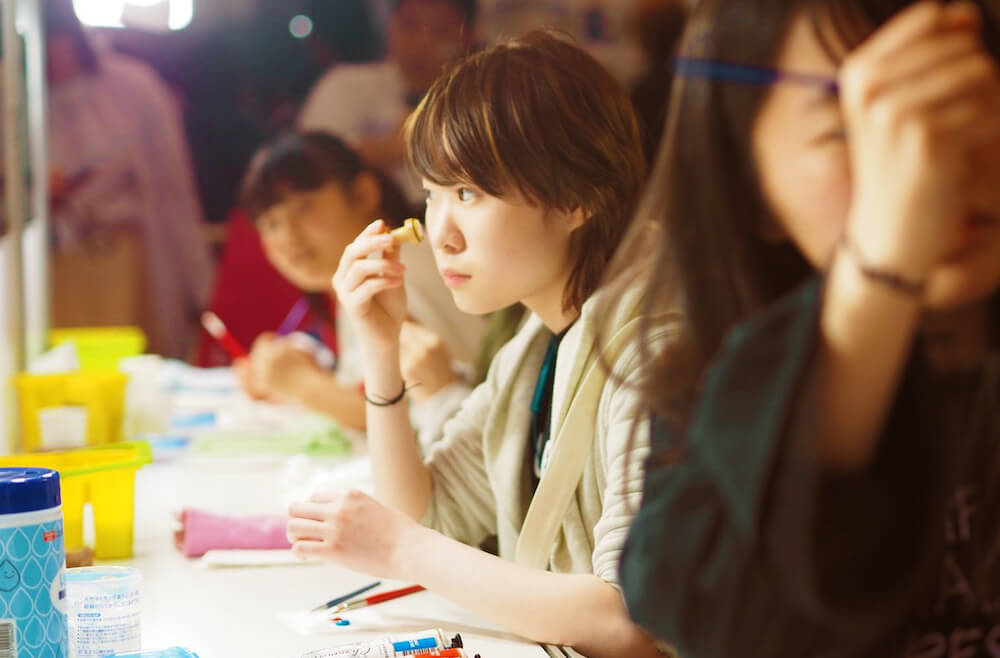
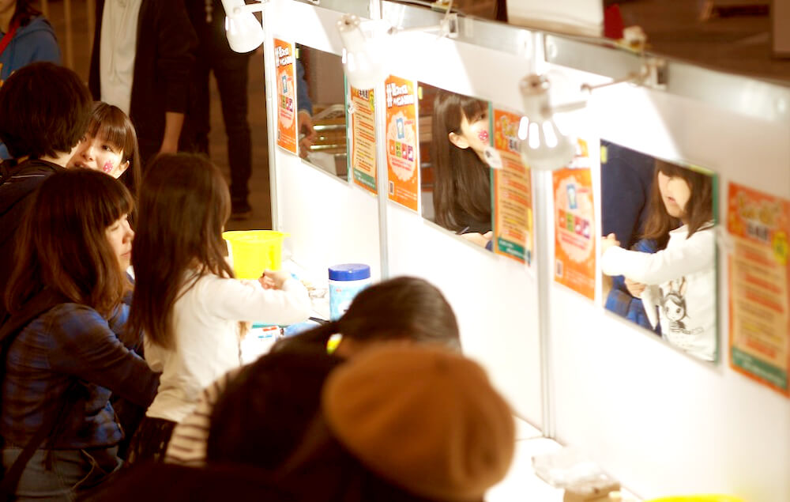
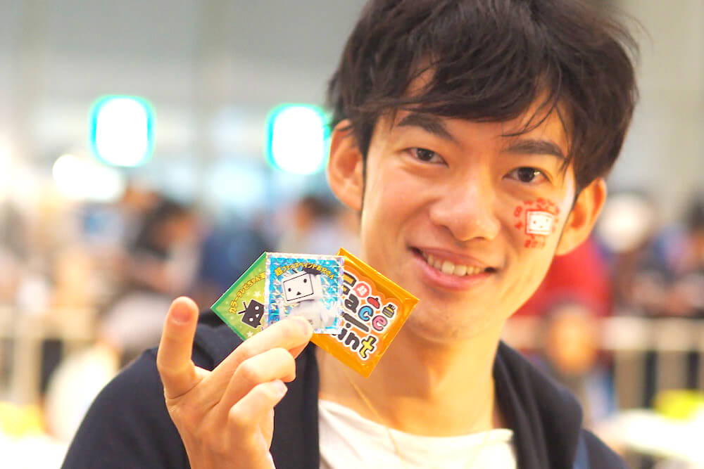
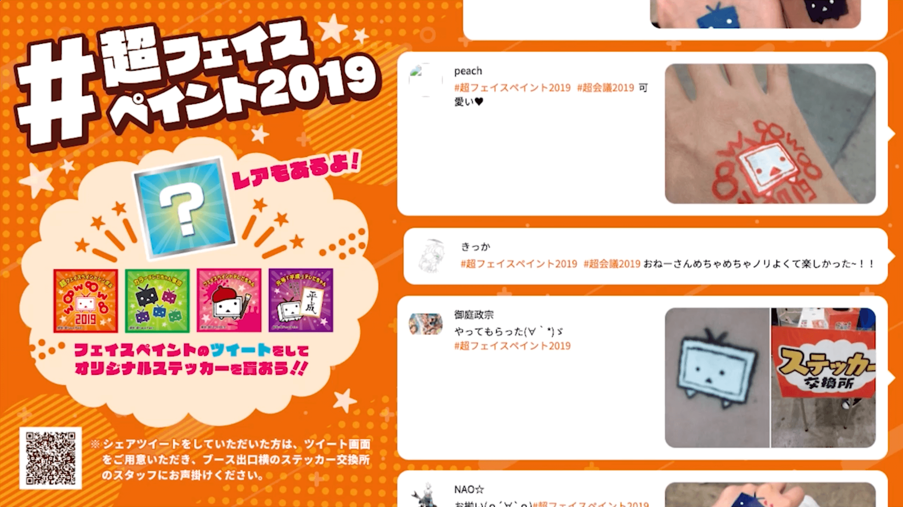
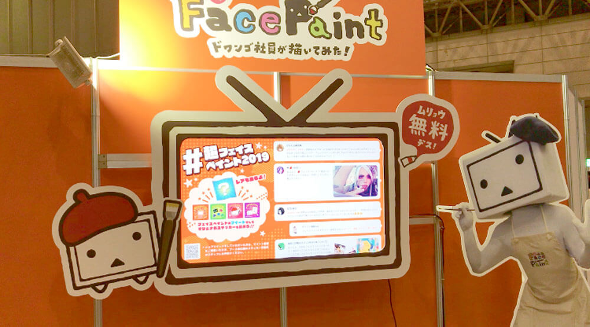

ニコニコ超会議 超フェイスペイントブース
ニコニコ超会議内で行なっている「超フェイスペイントブース」という デザイナーがユーザーの顔にキャラクターをペイントするブースのディレクターを担当しました
ブースとしては4回目のフェイスペイントブースでしたが毎年「シェア率が伸びない」という問題点がありました。
その為シェア率10%を目標にし「ユーザーがシェアしたくなる施策」を3つ行なった結果シェア率が33%になり無事目標を超える事ができました(※前年度5%)
①ちょい足しスポット
通常のメニュー＋ユーザーが自身でペイントを足し唯一無二のデザインを作っていただく事でユーザーの満足度を上げ
、自然とシェアしたくなるようなペイントにする為の施策です。
筆に馴染みが無いユーザーもアレンジができるよう絵の具を付ける専用のスタンプを設置し、簡単にペイントができるよう工夫しました
実際の様子▼
 ②フォトスポット
フェイスペイントを利用するユーザーの大半は20代前後半な為、その年代が写真を撮りたくなり且つシェアしたくなるような写真が撮れる
スポットを考案しました
20代前後半は圧倒的に自撮りが多い為、自撮りで盛れるようライトや背景を設置しつつ日本人の羞恥心を組みプライベートな空間で撮れるようボックス型を採用しました。
ちょい足しブース・フォトスポット共に連日列が並ぶ程人気スポットとなり、目標達成に貢献しました。
③ステッカープレゼント企画
ただのステッカーではなく袋とじ方式にしつつレアを作る事によってより探究心を掻き立てシェアに繋げる施策です
予算との兼ね合いでステッカー程度のものしか制作できなかったのですがその中で工夫を入れる事により多くのユーザーがステッカーガチャをしてくれました。
DAIGOさんも▼
おまけ
フェイスペイントブースは比較的待ち時間が長いブースなので、ユーザーのテンションを上げつつ飽きさせないよう 待機列にモニターを設置しリアルタイムで取得したツイートやキャンペーン内容を流す、という施策も行いました。
  BACK